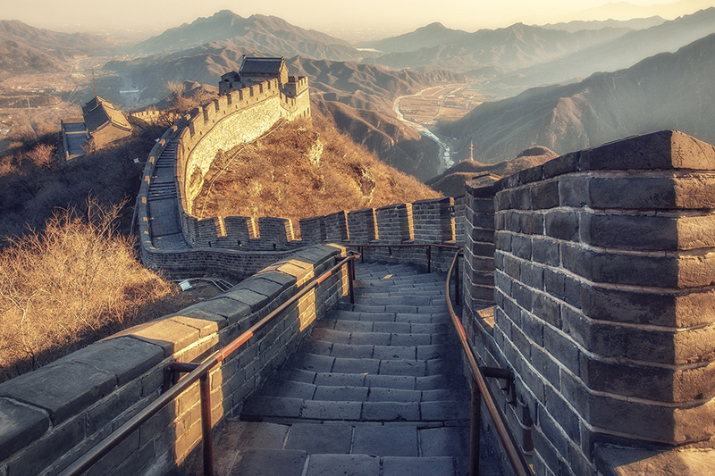
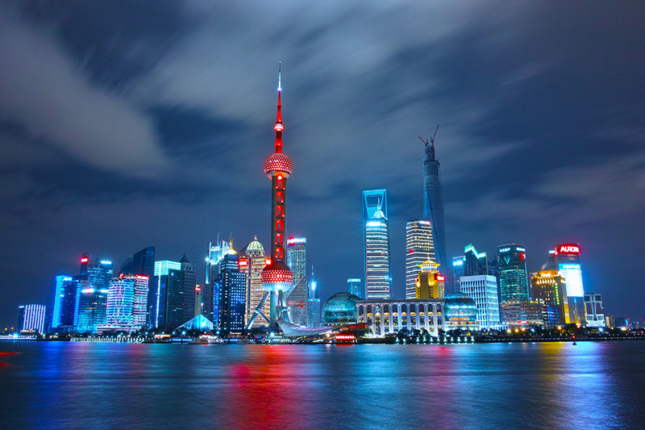
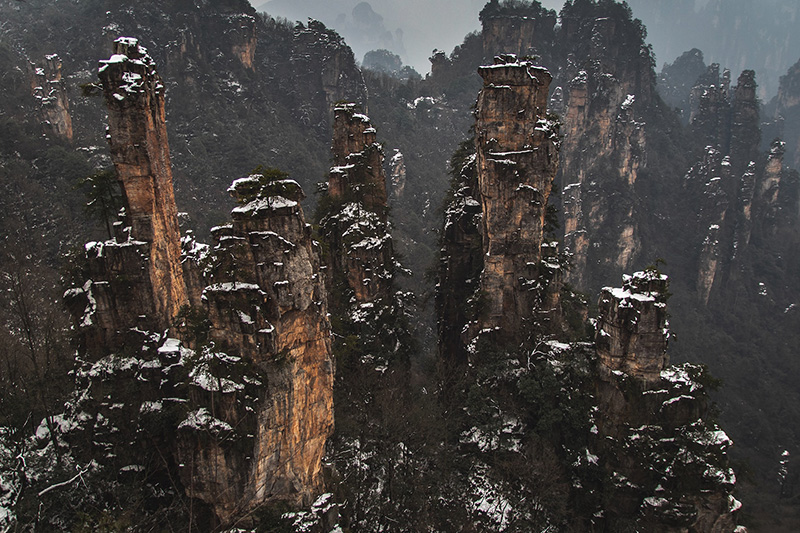

Welcome China
Welcome to China, a country with a rich cultural heritage, stunning natural landscapes,
and bustling modern cities. From the Great Wall to the Forbidden City, China is a land of
wonders waiting to be explored.
China is a country located in East Asia with a population of over 1.4 billion people,
making it the most populous country in the world. It has a rich history and culture dating
back thousands of years, with notable contributions to fields such as art, philosophy, and
science. China is also a major player in the global economy and a hub for technology and
innovation. Its diverse landscape ranges from towering mountain ranges to sprawling
metropolitan cities, and it is home to a wide range of unique and exotic wildlife.
<<<<<<< HEAD
Discover China

History and Culture
China has a history that spans more than 5,000 years. From the dynasties of ancient times to the modern era, China has been shaped by its unique culture, traditions, and innovations. Today, visitors to China can discover its history and culture by exploring its ancient temples, museums, and historic sites.
=======
Discover China

History and Culture
China has a history that spans more than 5,000 years. From the dynasties of ancient
times to the modern era, China has been shaped by its unique culture, traditions, and
innovations. Today, visitors to China can discover its history and culture by
exploring its ancient temples, museums, and historic sites.
>>>>>>> d9121731207215f346ba638dda6d65ba319042ba
<<<<<<< HEAD
Modern Cities
China is a rapidly developing country with some of the world's most vibrant and modern
cities. From the skyscrapers of Shanghai to the high-tech hub of Shenzhen, China's cities are buzzing with energy and innovation. Whether you're looking to shop, dine, or experience the nightlife it is best.
=======

Modern Cities
China is a rapidly developing country with some of the world's most vibrant and modern
cities. From the skyscrapers of Shanghai to the high-tech hub of Shenzhen, China's
cities are buzzing innovation. Whether you're looking to dine, or experience the
nightlife, visit china
>>>>>>> d9121731207215f346ba638dda6d65ba319042ba
<<<<<<< HEAD

Cuisine
Chinese cuisine is one of the most diverse and flavorful in the world. From spicy Sichuan
cuisine to delicate Cantonese dishes, China's culinary traditions are as varied as its geography. Don't miss the chance to try some of China's most famous dishes, like Peking duck, hot pot, and dumplings.
Natural Beauty
China is also home to some of the world's most beautiful natural landscapes. From the
majestic peaks of the Himalayas to the tranquil waters of the Yangtze River, China's diverse geography
offers something for every traveler. Don't miss the chance to explore the stunning karst mountains.
=======

Cuisine
Chinese cuisine is one of the most diverse and flavorful in the world. From spicy
Sichuan cuisine to delicate Cantonese dishes, China's culinary traditions are as
varied as its geography. Don't miss the chance to try some of China's most famous
dishes, like Peking duck, hot pot, and dumplings.

Natural Beauty
China is also home to some of the world's most beautiful natural landscapes. From the
majestic peaks of the Himalayas to the tranquil waters of the Yangtze River, China's
diverse geography offers something for every traveler. Don't miss the chance to
explore the stunning karst mountains of Guilin.
>>>>>>> d9121731207215f346ba638dda6d65ba319042ba
<<<<<<< HEAD
Planning Your Trip
Ready to start planning your trip to China? With so much to see and do, it can be hard to know where to start. Check out our travel guide for tips on where to go, what to see, and how to get around. Whether you're a
first-time visitor or a seasoned traveler, we can help you make the most of your trip to China.
=======
Planning Your Trip
Ready to start planning your trip to China? With so much to see and do, it can be hard to
know where to start. Check out our travel guide for tips on where to go, what to see, and
how to get around. Whether you're a first-time visitor or a seasoned traveler, we can help
you make the most of your trip to China.
Have fun and stay safe!
Get in touch with us!
>>>>>>> d9121731207215f346ba638dda6d65ba319042ba